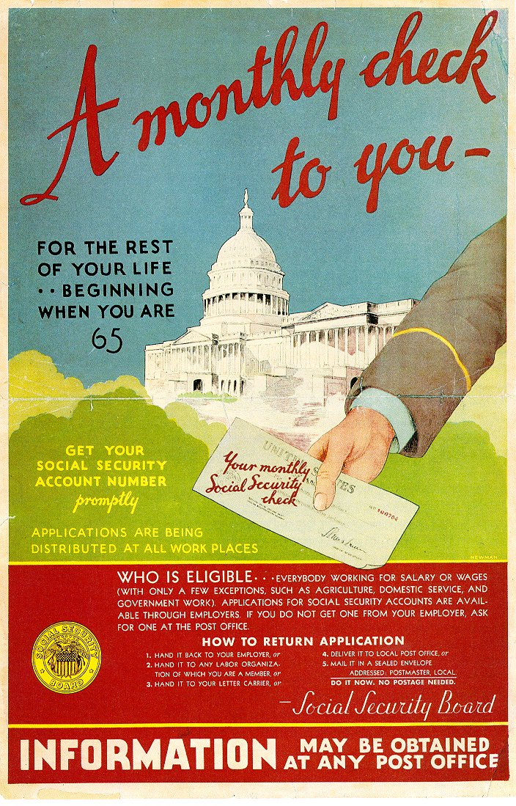

Public Policy
Dr. Christopher N. Lawrence
Middle Georgia State University
POLS 1101: American Government
🔊 Disable Narration
Public Policy and the Policy Process
-
Public policy: the actions and activities of government.
We can also think about public policy as what government produces as an outcome.
-
Scholars who study government policymaking view it as a multistage process with five steps:
Agenda Setting → Policy Formulation → Policy Adoption → Policy Implementation → Policy Evaluation.
Steps in the Policymaking Process
Agenda setting: defining and prioritizing the problems facing government.
Policy formulation: considering possible solutions.
Policy adoption: formal government action to endorse a solution.
Policy implementation: bureaucracy attempts to make the policy work in practice.
Policy evaluation: government officials gather evidence on the effectiveness of the policy.
Types of Policies
-
There are three major types of government policies that are commonly implemented:
-
Redistributive policies
“Robin Hood” policies.
Example: social welfare programs.
-
Distributive policies
Examples: public education; agriculture subsidies.
-
Regulatory policies
Examples: speed limits; environmental laws.
-
Federal Spending Today
Entitlement Spending
-

Anyone who meets the eligibility criteria for an entitlement program has a legal right to benefit from it.
-
Most prominent and expensive programs are those primarily benefiting the elderly:
Social Security: old age, disability, and survivor benefits.
Medicare: medical coverage for senior citizens, the permanently disabled, and those with certain terminal illnesses.
Anti-Poverty Policy
-
Typically structured as “cooperative federalism” programs with cost-sharing between federal and state governments.
Unemployment insurance.
Temporary Assistance to Needy Families (TANF).
Medicaid and CHIP (Children's Health Insurance Program).
Supplemental Nutritional Assistance Program (SNAP).
Section 8 (housing vouchers).
Health Policy
-
2010 Patient Protection and Affordable Care Act (PPACA or “ObamaCare”) restructured health care substantially:
Eliminates pre-existing conditions rules and limits ability of insurers to charge more based on gender, age, or most pre-existing conditions.
Introduces individual and employer mandates to require buying health insurance.
Establishes “exchanges” to sell individual and small group health insurance policies.
Expands eligibility for Medicaid; many states opted out.
Provisions being phased in; long-term impact unclear.
Economic Policy
Debate over how much government should be involved in managing the economy.
Two ways the federal government can attempt to manage the economy:
Fiscal policy.
Monetary policy.
Fiscal Policy
-
Using taxes and government spending to influence society.
Taxes may be used to fund government programs or try to shape the actions of individuals and corporations.
Government may provide subsidies to encourage the development of certain industries or companies or change their behavior.
Keynesianism: use of taxes and spending to smooth out the business cycle.
Tax Policy
Primary source of federal revenues is the individual income tax. Rate structure is progressive.
Separate payroll taxes fund social security and Medicare.
Conservative politicians often favor simplifying the income tax by only having one tax rate and eliminating deductions, making it a flat tax.
Most countries have some form of value added tax (VAT), similar to a national sales tax. VATs tend to be regressive.
Deficits and the Debt
Difference between expenditures and revenues is the deficit (or, rarely, a surplus).
The public debt is the accumulated borrowing to cover deficits over time; bonds are sold to cover deficits.
Monetary Policy
-
Changing the supply of money affects interest rates and inflation.
-
Monetary policy is managed by the Board of Governors of the Federal Reserve System.
Seven members appointed by president and confirmed by the Senate.
Serve 14-year terms, not eligible for reappointment.
Goals: “maximum employment, stable prices, and moderate long-term interest rates.” (12 USC 225a)
Foreign Policy
Historical debate between isolationism and interventionism.
-
Major actors:
National Security Council (NSC).
Department of State: responsible for diplomacy.
Department of Defense (DoD): military heads are the Joint Chiefs of Staff (JCS), under civilian control.
The Intelligence Community
-
Under supervision of the Director of National Intelligence. Key agencies:
Central Intelligence Agency (CIA): independent agency.
-
Within the Department of Defense:
National Security Agency (NSA)
Defense Intelligence Agency (DIA)
Federal Bureau of Investigation (FBI), National Security Branch: within Department of Justice.
The War Powers Resolution of 1973
-
Response to Korean and Vietnam wars. Key provisions:
Requires president to notify Congress of use of military force.
Presidents cannot commit troops for more than 60 days without explicit authorization by Congress.
Congress may pass a concurrent resolution requiring president to withdraw troops at any time.
Presidents have argued the law is unconstitutional; have generally conformed to the spirit but not the letter of the law.
“Intermestic” Issues
-
Trade policy: free trade vs. protectionism.
Regional integration: NAFTA, USMCA.
Global free trade: WTO.
-
Environmental policy and climate change.
Kyoto Protocol.
Cap-and-trade, carbon taxes, etc.
Immigration policy.
Copyright and License
The text and narration of these slides are an original, creative work, Copyright © 2000–25 Christopher N. Lawrence. You may freely use, modify, and redistribute this slideshow under the terms of the Creative Commons Attribution-Share Alike 4.0 International license. To view a copy of this license, visit http://creativecommons.org/licenses/by-sa/4.0/ or send a letter to Creative Commons, 444 Castro Street, Suite 900, Mountain View, California, 94041, USA.
Other elements of these slides are either in the public domain (either originally or due to lapse in copyright), are U.S. government works not subject to copyright, or were licensed under the Creative Commons Attribution-Share Alike license (or a less restrictive license, the Creative Commons Attribution license) by their original creator.
Works Consulted
The following sources were consulted or used in the production of one or more of these slideshows, in addition to various primary source materials generally cited in-place or otherwise obvious from context throughout; previous editions of these works may have also been used. Any errors or omissions remain the sole responsibility of the author.
- Barbour, Christine and Gerald C. Wright. 2012. Keeping the Republic: Power and Citizenship in American Politics, Brief 4th Edition. Washington: CQ Press.
- Coleman, John J., Kenneth M. Goldstein, and William G. Howell. 2012. Cause and Consequence in American Politics. New York: Longman Pearson.
- Fiorina, Morris P., Paul E. Peterson, Bertram D. Johnson, and William G. Mayer. 2011. America's New Democracy, 6th Edition. New York: Longman Pearson.
- O'Connor, Karen, Larry J. Sabato, and Alixandra B. Yanus. 2013. American Government: Roots and Reform, 12th Edition. New York: Pearson.
- Sidlow, Edward I. and Beth Henschen. 2013. GOVT, 4th Edition. New York: Cengage Learning.
- The American National Election Studies.
- Various Wikimedia projects, including the Wikimedia Commons, Wikipedia, and Wikisource.